Paste a public API URL, review the AI-generated plan, and download a ready-to-deploy Django project. No boilerplate, no setup.
class Item(models.Model): title = models.CharField(max_length=300) price = models.FloatField() image = models.URLField(max_length=500)
A guided workflow where the AI proposes and you decide. No black box, no surprises.
JSON or XML — WebBuilder detects and safely parses the format automatically.
The LLM proposes a site type, relevant fields and layout. Accept or regenerate with your prompt.
Full Django project: models, views, templates with Tailwind, and a Dockerfile.
Get a ZIP ready to run locally or deploy in one command with Docker.
These are actual Django projects produced from public APIs — downloaded as a ZIP and deployed with one Docker command.
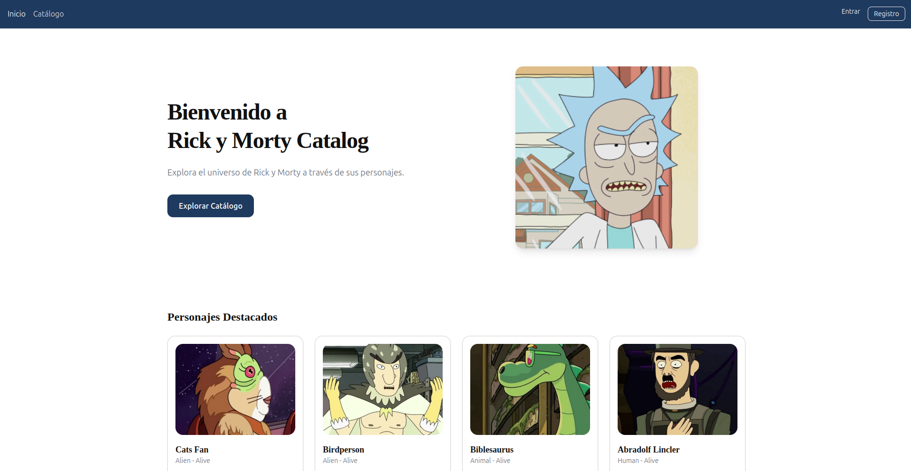
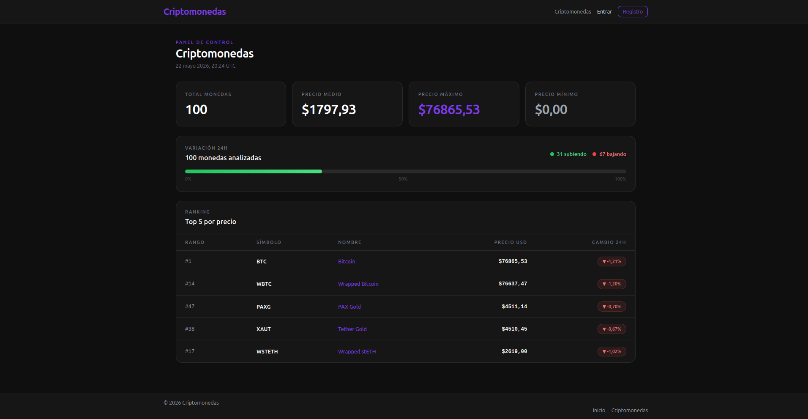
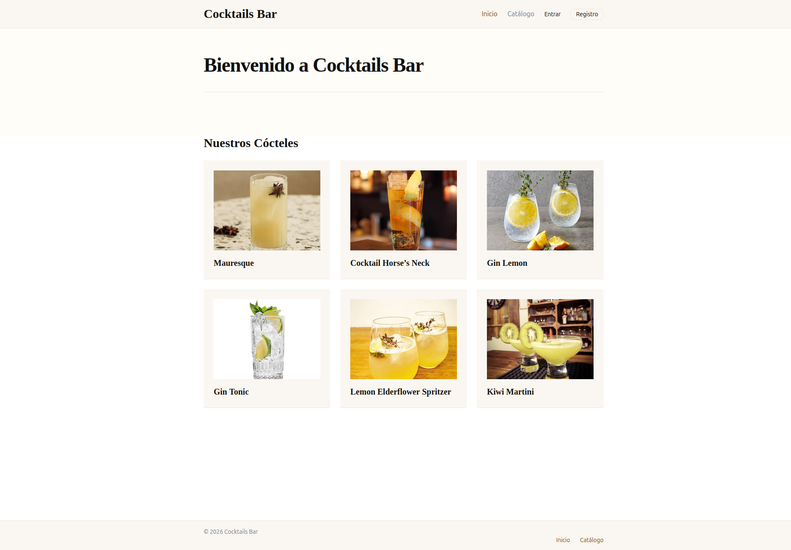
47 PUBLISHED SITES IN THE SYSTEM
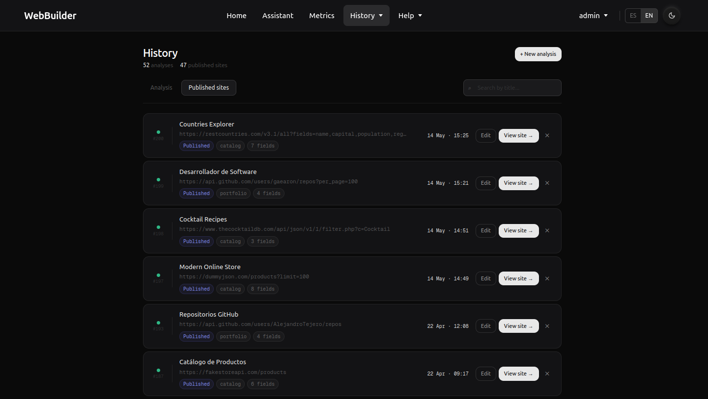
Switch model and provider with three environment variables. No code changes needed.
.env: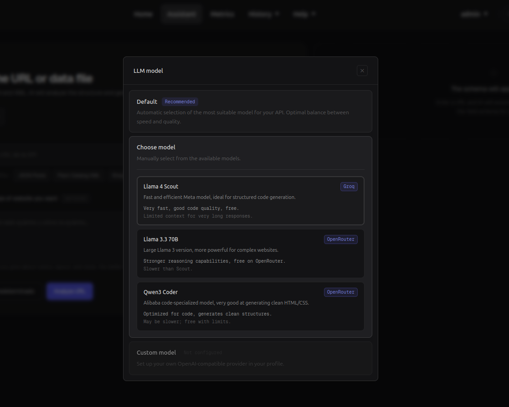
Every step is supervised. The model proposes, you approve. The output is real, runnable code.
Compatible with any OpenAI-format provider: OpenRouter, Groq, local models. Switch with three env variables.
XML protected with defusedxml against XXE attacks. JSON via standard library. No surprises.
Every analysis is saved: URL, date, status, raw data, parsed data, LLM summary and errors.
Not a template stuffed with placeholders: models, views, urls and templates adapted to your dataset.
Don't like the AI plan? Regenerate it with a natural language instruction in plain English or Spanish.
Each generated project ships with a Dockerfile and entrypoint script. One command to run it.
From welcome emails to auto-shutdown of inactive containers — handled by n8n, not bolted into the core app.
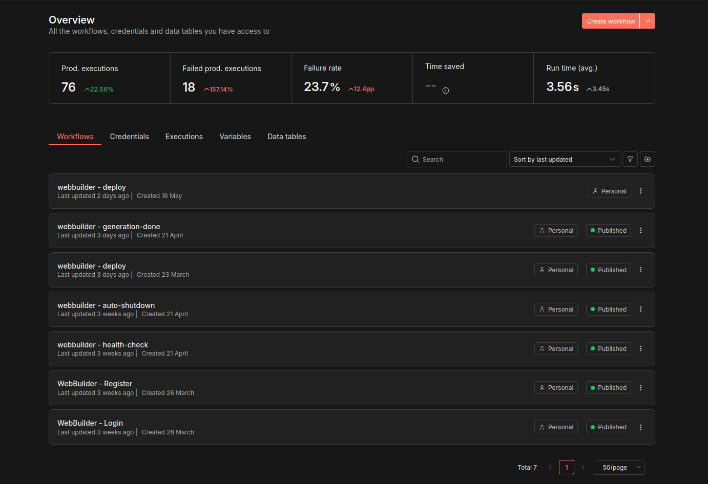
Everything you need to know before using WebBuilder for the first time.
WebBuilder is a web platform that converts any public API into a deployable website using generative AI to analyze the data, propose an architecture and write the code.
Skip the repetitive work of turning a dataset into a usable site. Paste a URL, supervise the AI's proposal, and download a real Django project ready to run.
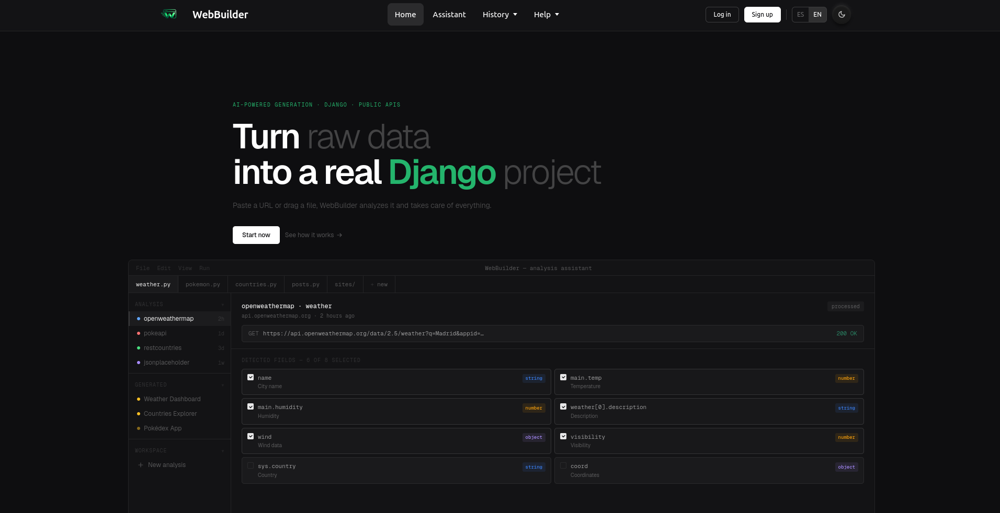
From zero to deployed site in under five minutes.
Sign up with email and password. You'll receive a welcome email via n8n.
Any endpoint returning JSON or XML. WebBuilder detects the format automatically.
Accept the LLM plan or regenerate with a custom prompt. Click generate.
Unzip, build the Docker image, and you're online.
Registration is required to save your generations and access the history.
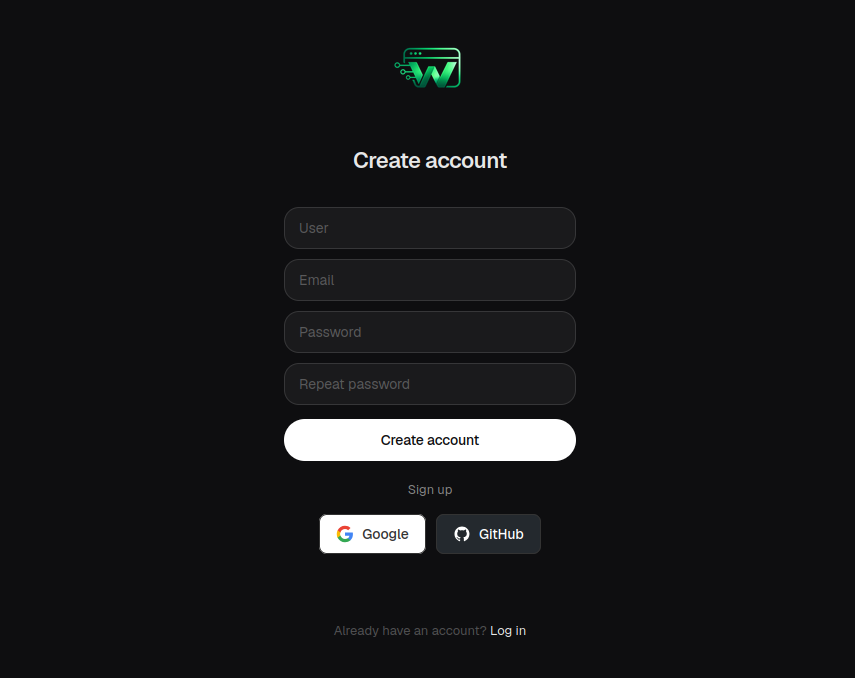
Once registered, log in with your credentials. Each session triggers an automatic notification email.
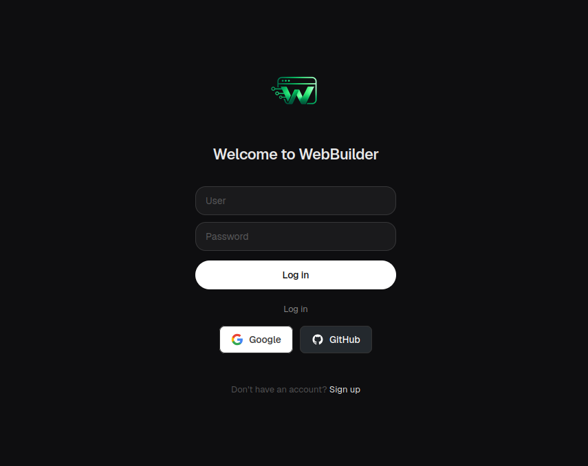
The first step is to provide a public API endpoint that returns JSON or XML data.
application/json) or XML (application/xml).# Copy any of these and paste directly into WebBuilder
https://pokeapi.co/api/v2/pokemon?limit=20
https://jsonplaceholder.typicode.com/posts
https://restcountries.com/v3.1/all
https://fakestoreapi.com/products
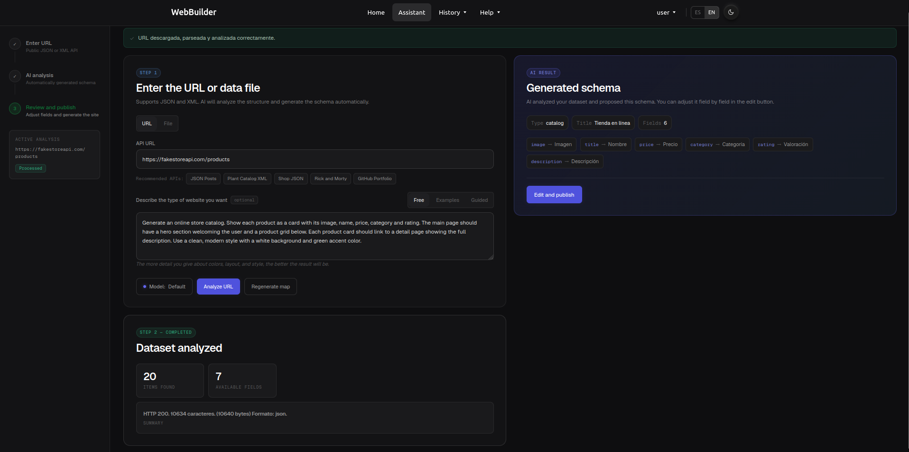
The LLM analyzes the dataset and proposes a complete plan. Your job is to review it and decide.
If the proposal doesn't match what you want, use the editor to adjust fields, labels and site type — or write a natural language instruction to regenerate the plan entirely.
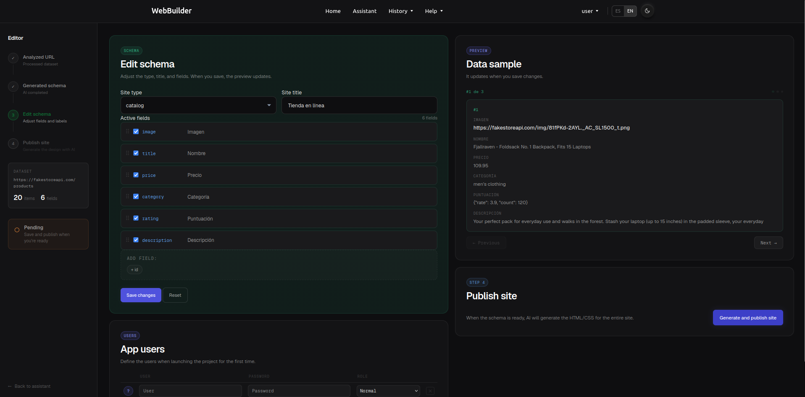
# Example custom prompts to guide the AI
"Make it a minimalist portfolio, hide the price field."
"Show this as a calendar of events grouped by month."
"Highlight the rating field prominently in each card."
Once the plan is approved, WebBuilder generates the complete source code.
models.py — Django models adapted to your data.views.py & urls.py — routes and view logic.templates/ — HTML with Tailwind CSS, responsive.load_data — management command that fetches and loads the data.Dockerfile & entrypoint.sh — ready for deployment.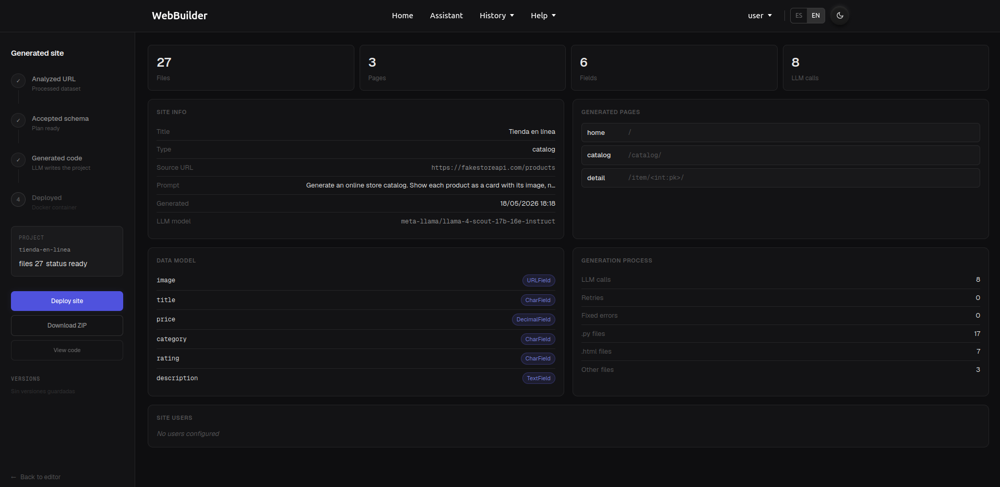
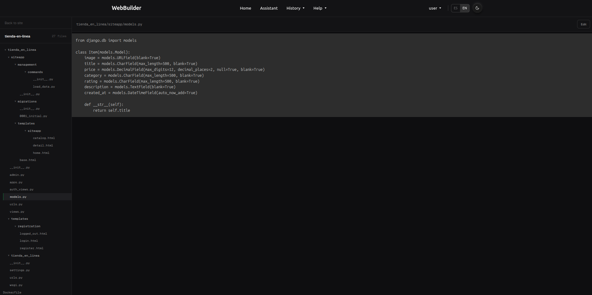
Download the ZIP, unzip it, and you have a full Django project ready to run.
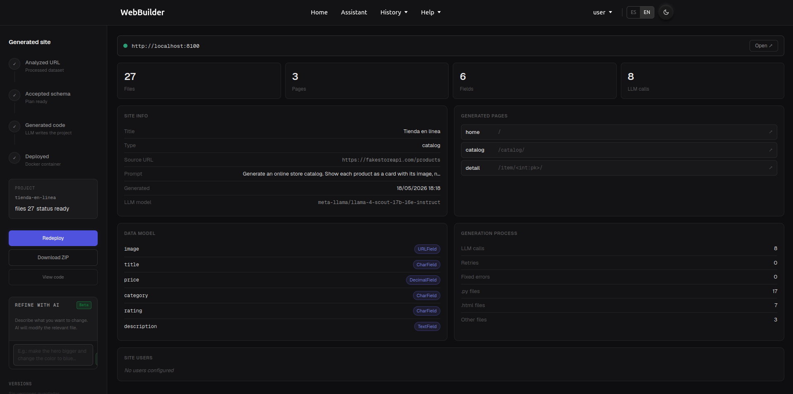
$ unzip my-site.zip && cd my-site $ pip install -r requirements.txt $ python manage.py migrate $ python manage.py load_data $ python manage.py runserver
$ docker build -t my-site . $ docker run -p 8000:8000 my-site
Visit http://localhost:8000 and your generated site is live.
These public APIs have been verified to work well. Use them as a starting point if you're not sure where to begin.
| API | Endpoint | Format | Site type | Notes |
|---|---|---|---|---|
| FakeStore | fakestoreapi.com/products | JSON | Catalog | No key required |
| REST Countries | restcountries.com/v3.1/all | JSON | Catalog | No key required, 250 records |
| Cocktail DB | thecocktaildb.com/api/json/v1 | JSON | Catalog | No key required |
| DummyJSON | dummyjson.com/products?limit=100 | JSON | Catalog | No key required, ideal for testing |
| JSONPlaceholder | jsonplaceholder.typicode.com/posts | JSON | Blog | No key required, ideal for testing |
| GitHub API | api.github.com/users/:user/repos | JSON | Portfolio | No key required |
| Rick and Morty | rickandmortyapi.com/api/character | JSON | Catalog | No key required |
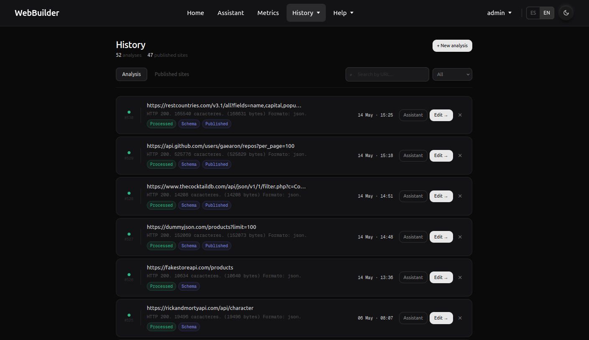
?limit=20 or similar parameters to keep the dataset small during your first test — generation is faster and the AI proposal is more accurate with focused data.Every analysis you run is saved to your personal history. Review past generations, re-download projects, or inspect errors.
WebBuilder reads its LLM configuration from a .env file. Change provider with three variables.
LLM_BASE_URL=https://api.groq.com/openai/v1 LLM_API_KEY=your_api_key LLM_MODEL=llama-3.3-70b-versatile
Any provider implementing the OpenAI /chat/completions format. Tested with:
.env file to git. Use .env.example as a template instead.Something went wrong? Here are the most frequent issues and how to solve them.
Check that the URL is publicly accessible and returns JSON or XML. Some APIs require an API key or specific query params. Try opening the URL in your browser first.
Usually a provider issue — check your LLM_API_KEY is valid and the model name is correct. Try switching to Groq (fastest) or OpenRouter if your primary provider is down.
This can happen with smaller models on complex datasets. Use the regenerate button with a corrective prompt like "Fix any syntax errors and keep the same structure." GPT-4 or Claude produce fewer of these.
Ensure Docker is running locally. Check the requirements.txt inside the ZIP — sometimes the LLM adds a package that doesn't exist. Remove any unknown package and rebuild.
Use the regenerate prompt to guide the AI. For example: "This is a list of products. Use name, price and category. Generate a catalog layout." The more specific, the better.
Common questions about WebBuilder.